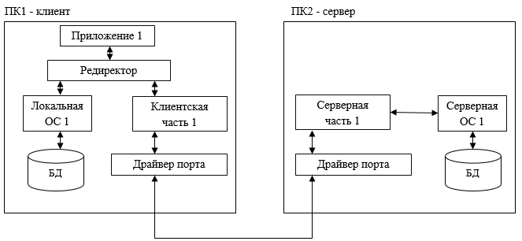

Виды серверного ПО:
Файловый сервер – предназначен для обеспечения доступа к файлам, хранящимся на серверных дисках организации.
Сервер баз данных – обеспечивает хранение, обработку и доступ к базам данных компании, осуществляемы с клиентских компьютеров.
Сервер приложений – осуществляет программную обработку данных, которые посылает ему пользователь, и выдает этому пользователю конечный результат.
Веб-сервер – отвечает за выдачу интернет страницы. Может одновременно обрабатывать большое количество запросов.
Почтовый сервер – предназначен для отправки, получения, хранения и распределения электронных писем.
Брандмауэр (файервол) – обеспечивает защиту внутренней сети и ее ресурсов от интернет-атак.
Прокси-сервер – служба, позволяющая выполнять клиентам косвенные запросы к другим сетевым службам.
Прокси-сервер скрывает от внешних пользователей структуру сети, обеспечивает доступ к сети по одному IP-адресу. Позволяет вмести с DNS-сервером производить автоматическую раздачу и назначение IP-адреса.
DNS-сервер – служит для автоматического учета и выдачи уникальных IP-адресов всем узлам, которые к нему обращаются.
Сервер удаленного доступа – позволяет получать через Интернет доступ к локальной сети.
Принт-сервер – позволяет получить доступ к сетевому принтеру.

Если запрос передается к ресурсу данного ПК, то он переадресовывается к локальной ОС.
Если же это запрос к удаленному ресурсу, то он перенаправляется в клиентскую часть, где преобразуется из локальной формы в сетевой формат и передается портом.
Серверная часть ОС ПК2 принимает запросы, преобразуя их в локальную форму и передает для выполнения своей локальной ОС.
После того как результат получен сервер образуется к транспортной подсистеме и направляет ответ клиенту, выдавшему запрос.
Клиентская часть преобразует результат в соответствующий формат и адресует его тому приложению, которое выдало запрос.
Порядок установки ПО:
1. Убедиться, что конфигурация компьютера отвечает минимальным требованиям ПО.
2. Проверить наличие свободного места на жестком диске, по необходимости освободить.
3. Отключить антивирусные программы.
4. Остановить выполнение посторонних программ.